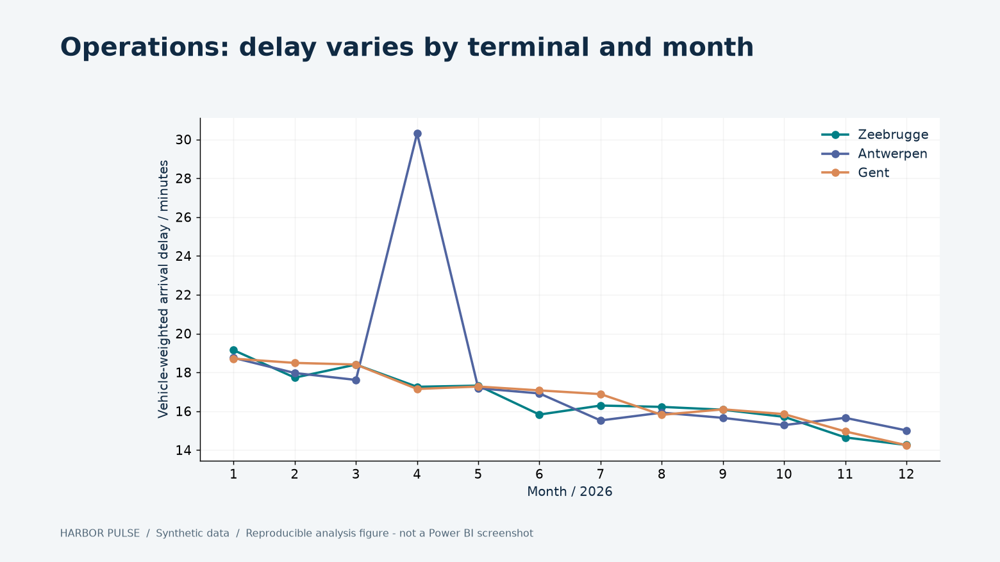
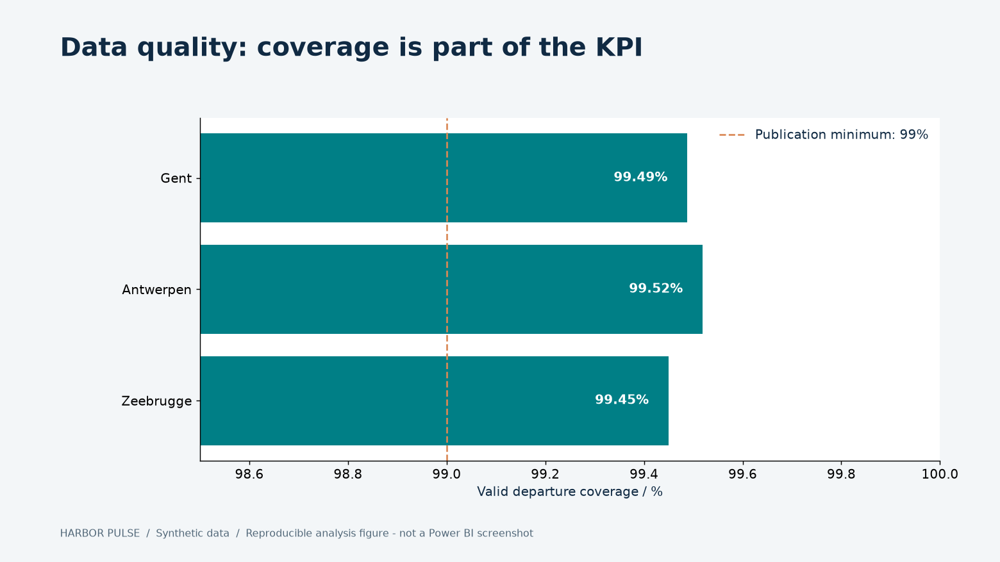
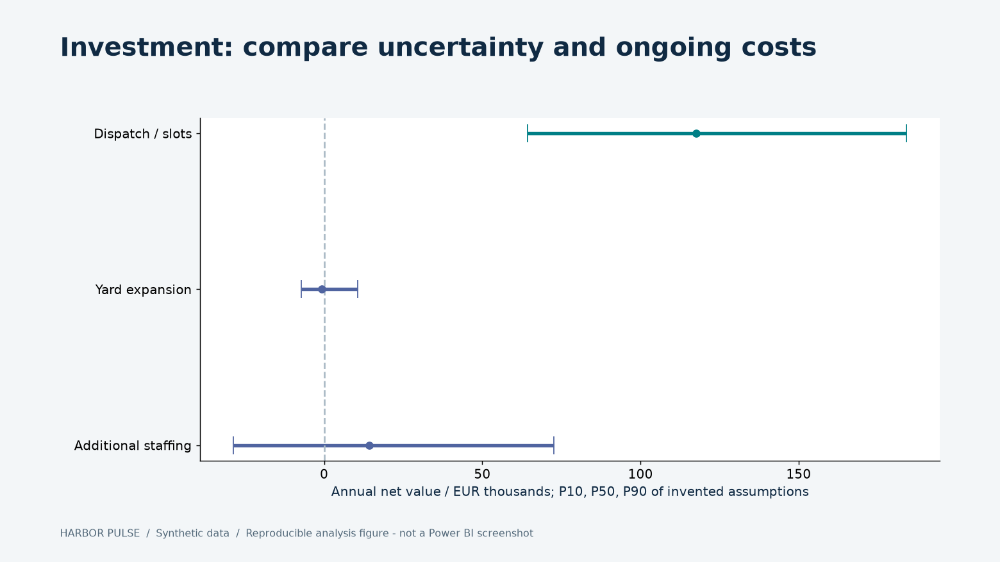
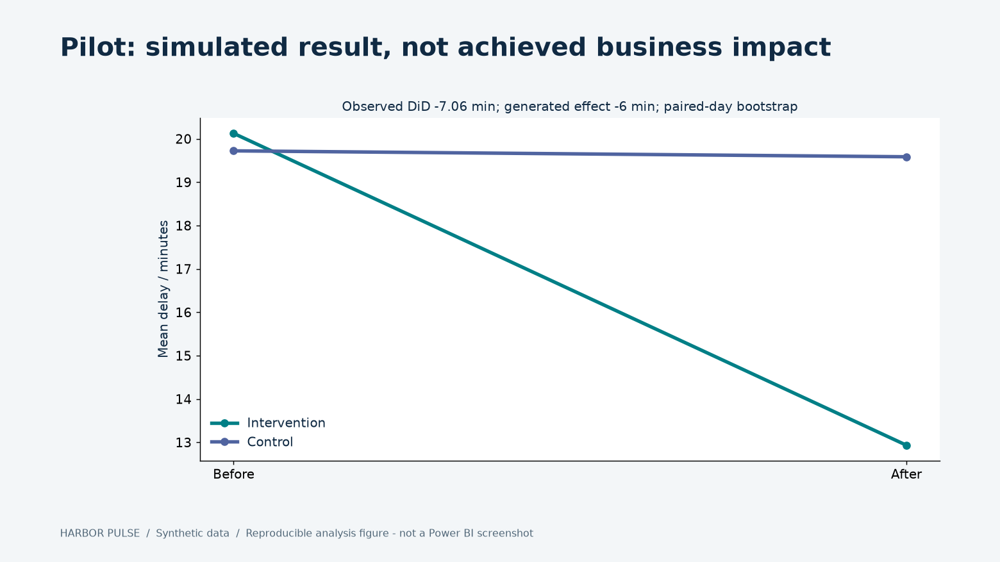
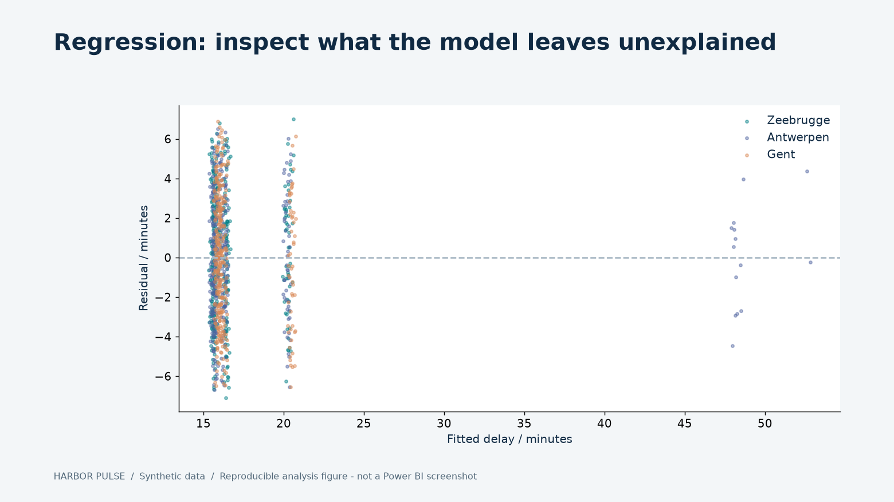
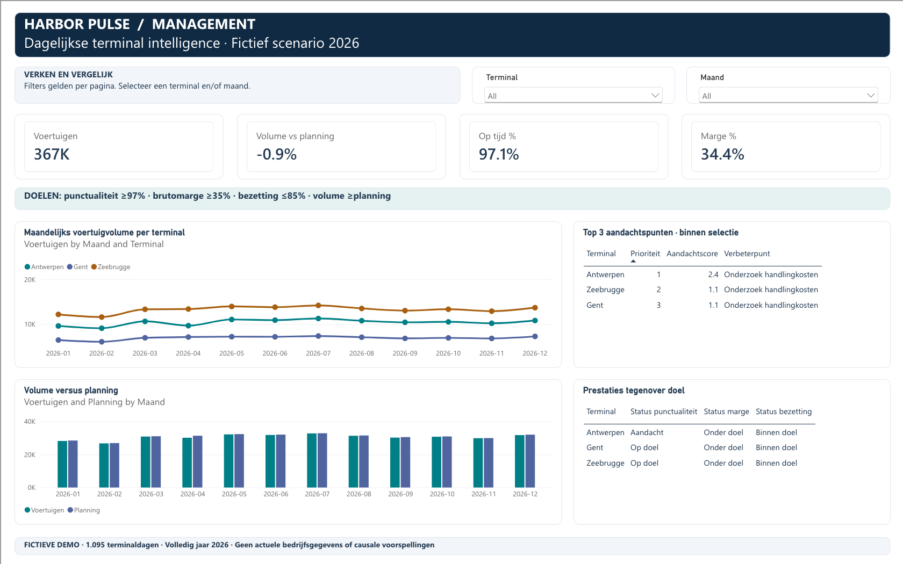

01 / Understand operations

Daily facts retain terminal, date and vehicle units. Investigate volume, maintenance and staffing before drawing a conclusion.
Python / SQL / Power BI / DAX / Decision support
How could a terminal network reduce waiting without moving queues, overstating savings or losing trust in its numbers?
Follow the evidence from flawed source records to an investment comparison and a measurable pilot.
Review without a Microsoft accountSynthesized narration. All charts are reproducible analysis figures, not Power BI screenshots. Read the transcript.
Evidence before recommendation

Daily facts retain terminal, date and vehicle units. Investigate volume, maintenance and staffing before drawing a conclusion.

Incomplete departures remain visible. They do not become zero-duration stays. Conflicts are quarantined and corrections are versioned.

Pilot dispatch first under the invented assumptions. Recurring costs, implementation cost and the usable fraction of time savings are explicit.

Observed DiD is −7.06 min; the generator injects −6 min. Paired-day uncertainty, null simulations and guardrails separate demonstration from real evidence.

Q4 holdout RMSE is 3.56 min versus 4.11 for a mean baseline. Correlated staffing and terminal inputs limit interpretation. Predictive fit is not a causal staffing effect.
Genuine Power BI screenshots
Captured from the live Power BI renderer in an isolated, authenticated headless CLI session. These images show the report itself; the separate analysis figures below are generated from code.

Management - open the image for full resolution.
All twelve pages were captured and visually reviewed after correcting clipped text, inactive measure columns, undersized scenario selectors and misleading table totals. The source data is synthetic.
Interactive assumption check
Compare annual value under central time-reduction assumptions. Adjust the common realizable fraction and value per waiting hour. These are invented inputs, not a forecast.
Loading reproducible evidence…
| Option | Annual net | Year-one cash | Break-even fraction |
|---|
Annual net deducts recurring cost. Year-one cash also deducts implementation cost. Rank by annual net; choose no implementation if every option is negative. The Monte Carlo uses separate, option-specific ranges.
Business framing, understandable evidence and an explicit next decision.
Contribution and interview guide ↗Versioned ingestion, executable tests, SQL, weighted DAX, simulation and operational receipts.
Follow the five-minute code tour ↗Leer de termen, volg het proces van bron tot rapport en reken een KPI na. Bereid HR- en seniorvragen voor en voer vier lokale demonstratieopdrachten zelf uit.
Kennisgids · Interviewbank · Zelfstandige demonstratieInspect investment break-even thresholds, dependent cost/time assumptions, selectively missing records, changing periods, terminal priority weights and useful pilot effects.
Read the six assumption challenges · Check the hand-calculated dataset and data limitsAll records, organizations, costs and intervention outcomes are fictitious. This is AI-assisted portfolio work owned by Philippe Godfroy. It does not claim actual savings, stakeholder sign-off or professional seniority.
The native model and all twelve report pages are query-checked and visually reviewed. Three terminal RLS roles are deployed; role-specific viewer tests were blocked by PowerBI licensing and no viewer-enforcement pass is claimed. Admin APIs confirm the explicit owner-only report/model access roster. Native refresh and a 26-hour freshness policy run locally; the Mac and CLI authentication must remain available. Profile pinning has no supported CLI API.
Read implementation status and limitations ↗